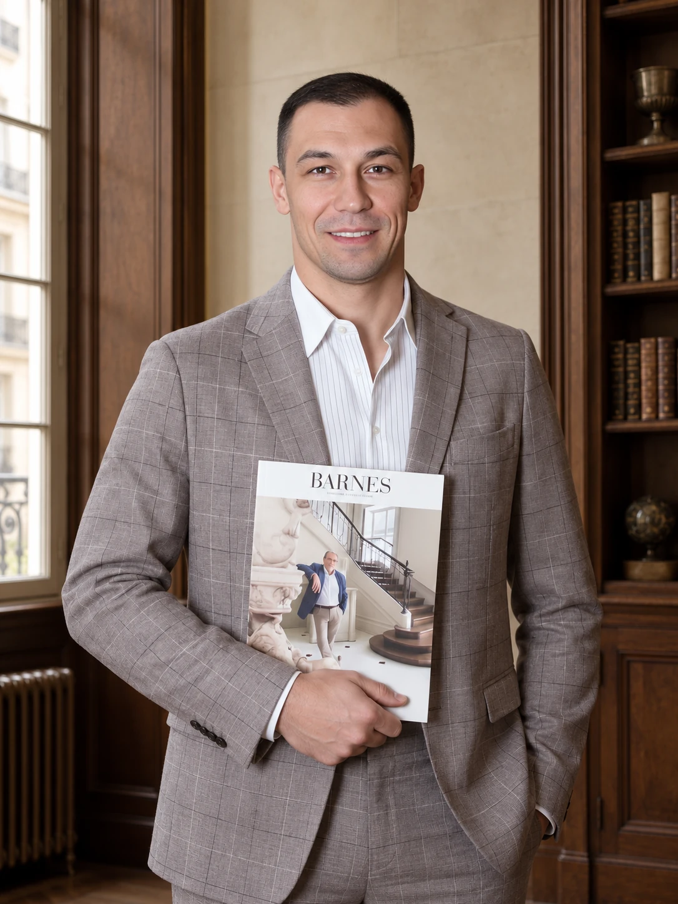

<div class="handoff-block" data-handoff-block="14-floating-expert" data-block-kind="floating-expert"><aside class="floating-expert floating-expert--gorodskaya" aria-label="Руслан Прус" data-v-cd0a1259=""><button type="button" class="floating-expert__card" aria-haspopup="dialog" data-v-cd0a1259=""><span class="floating-expert__avatar" data-v-cd0a1259=""></span><span class="floating-expert__content" data-v-cd0a1259=""><span class="floating-expert__label" data-v-cd0a1259="">Руководитель департамента городской недвижимости</span><span class="floating-expert__title" data-v-cd0a1259="">Задать вопрос эксперту</span><span class="floating-expert__name" data-v-cd0a1259="">Руслан Прус</span></span></button><button type="button" class="floating-expert__close" aria-label="Скрыть карточку Руслан Прус" data-v-cd0a1259=""></button></aside><script type="application/json" data-handoff-state="">{"sliderHints":[],"opts":[],"variants":[],"reviews":[],"filters":null}</script></div>
